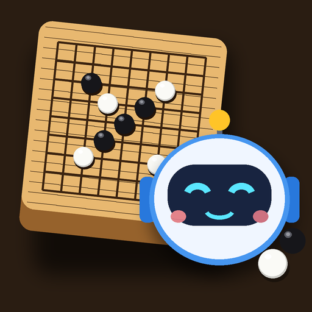

小柯機器人圍棋競賽
3D 立體圍棋．AI 對弈．即時勝率．動畫語音教學
不用安裝，電腦、平板、手機的瀏覽器都能玩（建議 Chrome、Edge 或 Safari）。
Windows 11安裝版．內建 KataGo
MacBook ProApple 晶片／Intel．內建 KataGo
Android 手機APK 安裝檔
iPad／iPhone用 Safari 開，按一下安裝
線上版和電腦版的差別
- 線上版的 AI 是在瀏覽器裡執行的「小柯 JS 引擎」；電腦版內建 KataGo，棋力、勝率與覆盤速算更強更準。
- 棋譜、設定和自己加的音樂都存在這台裝置的瀏覽器裡；換裝置可以用棋譜庫的「匯出／匯入 SGF」搬過去。
- 遠端對弈用房號連線，線上版、電腦版、手機版彼此都能對下。
- Chrome／Edge 可以按網址列的「安裝」，iPhone／iPad 的 Safari 可以「加入主畫面」，就會像 App 一樣有小柯圖示。